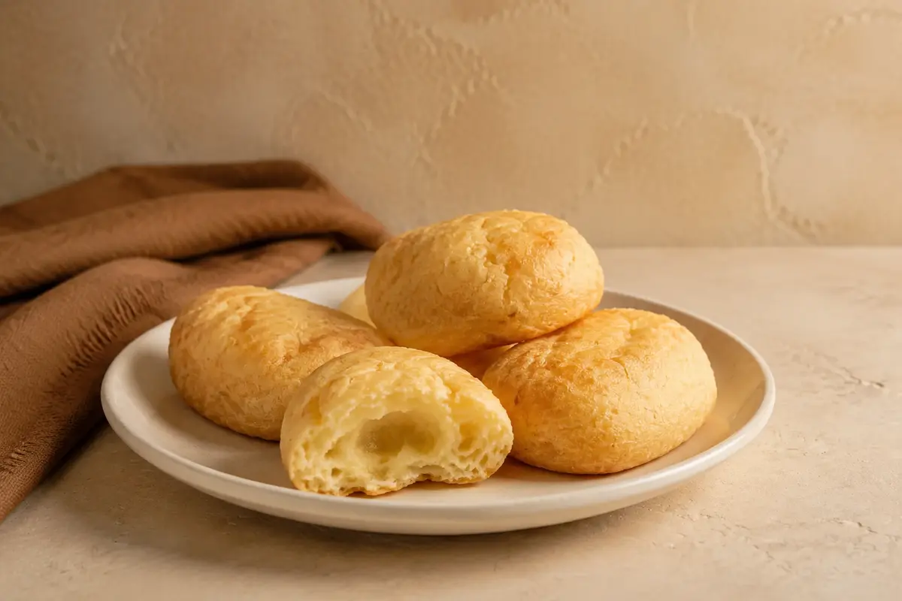

Postres ecuatorianos
Pan de yuca
Panecillo ecuatoriano de yuca y queso, crujiente por fuera y tierno por dentro. Una opción sabrosa y reconfortante para disfrutar en cualquier momento.
2,50 € / unidad

Postres ecuatorianos
Panecillo ecuatoriano de yuca y queso, crujiente por fuera y tierno por dentro. Una opción sabrosa y reconfortante para disfrutar en cualquier momento.
2,50 € / unidad